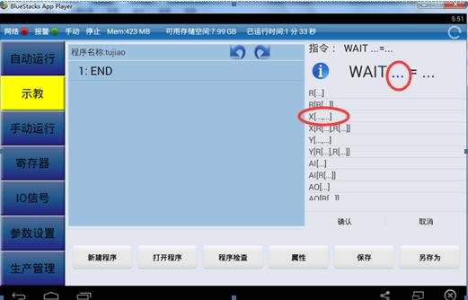

3.2 涂胶编程与操作
3.2.5涂胶示教编程
涂胶程序如下：
表3-2 涂胶程序
| 序号 | 程序 | 程序注释 |
| 1 | WAIT DI[1]= ON | 等待涂胶控制输入信号 |
| 2 | J P[1] S100% FINE | 移动胶枪至1点 |
| 3 | J P[2] 50mm/sec FINE | 工具抓取工件 |
| 4 | DO[1]=ON | 打开胶枪，涂胶开始 |
| 5 | J P[3] 50mm/sec FINE | 涂胶至3点 |
| 6 | J P[4] 50mm/sec FINE | 涂胶至4点 |
| 7 | J P[5] 50mm/sec FINE | 涂胶至5点 |
| 8 | J P[6] 50mm/sec FINE | 涂胶至6点 |
| 9 | DO[2]=ON | 关闭胶枪 |
| 10 | J P[7] 50mm/sec FINE | 移动胶枪至7点 |
| 11 | J P[1] 50mm/sec FINE | 移动胶枪至起始点1，便于第二次涂胶 |
| 12 | DO[2]=ON | 程序结束 |
1、新建程序
启动机器人，手动操作机器人返回参考点。在新建程序界面下输入程序名称“tujiao”。如图3-18所示。

图3-20 新建程序界面
2、I/O输入/输出条件等待喷胶控制指令信号
长按END在弹出的如图3-19窗口中选择等待指令，选择如图3-20中“WAIT …= …”，如图3-21，滑动指令光标指示如图3-22中蓝色“…”，点击“X[…,…]，如图3-23所示，在弹出的土图3-24对话框中输入1，点击“确认”，结果如图3-25所示，点击3-25中的“…”，弹出如图3-26对话框，选择“ON”点击“确认”按钮，即完成WAIT 1指令语句的输入，如图3-27所示。
图3-21 条件等待指令（1）
图3-22 条件等待指令（2）
图3-23 条件等待指令（3）
图3-24 条件等待指令（4）
图3-25 条件等待指令（5）
图3-26 条件等待指令（6）

图3-27 条件等待指令（7）
图3-28 条件等待指令（8）
图3-29 条件等待指令（9）
3、示教点1
长按WAIT X[1]=ON在弹出的图3-28窗口中选择下行插入，选择如图3-29中“运动指令”，选择图3-30中的J指令，滑动指令光标指示“…”，点击，在图2-31的对话框中输入“1”，点击“确认”，点击“确认”按钮，即完成J P[1] 100% FINE指令语句的输入，如图3-32所示。
图3-30 示教点1程序输入界面（1）
图3-31 示教点1程序输入界面（2）
图3-32 示教点1程序输入界面（3）
图3-33 示教点1程序输入界面（4）
图3-34 示教点1程序输入界面（5）
长按已建好的程序语句J P[1] 100% FINE，在弹出的窗口中选择“修改位置”，在弹出的窗口中选择“位置修改”进入手动界面进行位置修改，点击图中对话框中的 “关节坐标”，在弹出对话框中“坐标类型选择”中切换机器人坐标系至“基坐标”，手动将机器人移动到点1位置，点击“记录位置”，进入到“位置变量设置”对话框，此时坐标值已修改，已记录下机器人当前即第一点的位置。
图3-35 示教点1示意图
4、示教点2
长按指令行J P[1] 100% FINE，如图3-34,选择“下行插入”，选择运动指令，选择如图3-35所示“L”，将P中的值设为 “2”，改为100%改为50%即可，滑动指令选中“100”，选择constant，输入50，点击“确认”，如图3-36，37，38，39，40所示，完成如图3-41所示：L P[2] 50 mm/sec FINE指令语句的输入。
图3-36 示教点2程序输入界面（1）
图3-37 示教点2程序输入界面（2）
图3-38 示教点2程序输入界面（3）
图3-39 示教点2程序输入界面（4）
图3-40 示教点2程序输入界面（5）
图3-41 示教点2程序输入界面（6）

图3-42 示教点2程序输入界面（7）
图3-43 示教点2程序输入界面（8）
图3-44 示教点2示意图
长按已建好的程序语句L P[2] 50 mm/sec FINE，在弹出的窗口中选择“修改位置”，在弹出的窗口中选择“直角”坐标系选项，将“工具”坐标系选项设置为1，点击“位置修改”进入手动界面进行位置修改。在 “坐标类型选择”中切换机器人坐标系至“工具坐标”，在工具坐标系下手动将机器人移动到点1位置，点击“记录位置”，进入到“位置变量设置”对话框，此时坐标值已修改，已记录下机器人当前即第二点的位置。
5、示教点3，4，5，6，7以及喷涂完毕返回示教点2,如图3-43～48所示。
图3-45 示教点3示意图
图3-46 示教点4示意图
图3-47 示教点5示意图
图3-48 示教点6示意图

图3-49 示教点7示意图
图3-50 示教点2示意图
“涂胶”程序编制完成，点击“保存”显示“文件涂胶保存成功”点击“程序检查”。
6、程序测试
在首次运行新编写的程序之前，先执行程序检查，以保证程序的正常运行。点击程序检查，若程序有语法错误，根据提示报警号、出错程序及错误行号进行具体修改。程序报警定义请参照本书后面的附录，错误提示信息中括号中的数据即为报警号。 若程序没有错误，提示程序检查完成。
图3-51 程序运行测试
运行测试之前可以在工业机器人末端安装一支笔，在桌子上放置一个本子。加载已编好的程序，若想先试运行单个运行轨迹，可选择“ 指定行 ”，输入试运行的指令所在的行号，系统自动跳转到该指令。点击修调值修改按钮“ + ”和“ - ”将程序运行时速度倍率修调值减小。选择单步运行模式，点击启动，试运行该指令，机器人会根据程序指令进行相关的动作。根据机器人实际运行轨迹和工作环境需要可适当添加中间点。程序运行时，机器人带动笔在本子上画出运动轨迹。根据所画图形，判断机器人运行轨迹的正确性。